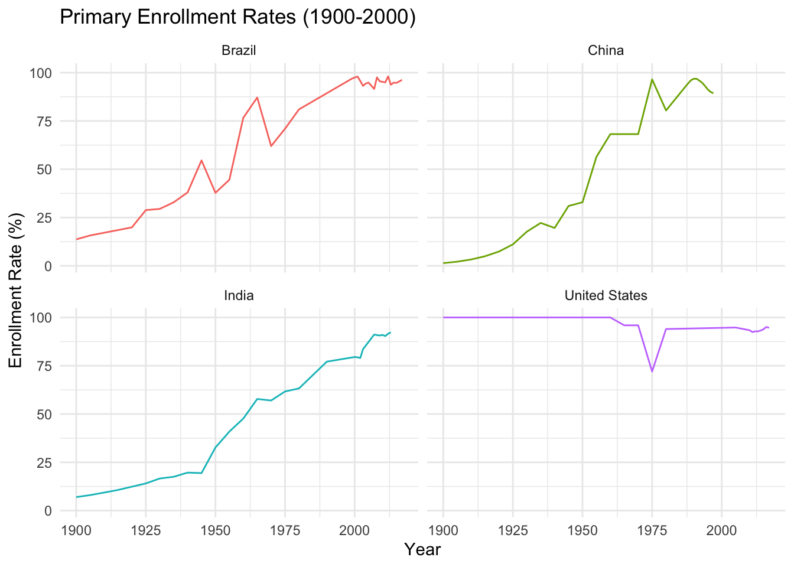

Hands-On Session: Introduction to Quarto for Problem Sets
I thank Rony Rodriguez-Ramirez for assistance in the creation of this exercise.
Introduction
In this hands-on session, you will learn how to create a Quarto document that you can use for your problem sets. The goal is to familiarize you with the basic structure of a Quarto project, how to format text, and how to integrate R code for data analysis. By the end of this session, you’ll be able to create a fully reproducible report that you can apply to future problem sets.
Exercise 1: Setting Up Your Quarto Project
Objective
Set up a Quarto project and create a Quarto document that will serve as the foundation for your report.
Instructions
Create a New Quarto Project:
Open RStudio.
Go to File > New Project > New Directory > Quarto Project.
Name your project (e.g., ProblemSet1) and choose a location on your computer.
Click “Create Project.”
Create a New Quarto Document:
Inside your project, go to File > New File > Quarto Document.
Choose “HTML” as the output format.
Add Document Metadata:
In the new document, add a title, your name as the author, and the date.
Example:
---title:"Problem Set 1"author:"Your Name"date:"2024-08-26"format: html---
Save Your Document:
Save the file with a descriptive name, like PS00.qmd.
Exercise 2: Formatting Your Document
Objective
Learn how to format text and structure your Quarto document.
Instructions
Create Headings:
Headings help to organize your document into sections and subsections. In Quarto, you can create headings using the # symbol. The number of # symbols indicates the level of the heading:
# for the main heading
## for a subheading
### for a sub-subheading
Example:
# Main Heading## Subheading### Sub-subheading
This hierarchical structure helps in navigating your document and making it more readable.
Write an Introduction Section:
Start by introducing the problem set and the dataset you will be using. Use a main heading for the introduction:
# IntroductionIn this problem set, we will analyze primary school enrollment data from various countries. The objective is to explore trends and identify key insights from the data.
Format Text:
You can format your text to emphasize important parts or create lists for better organization.
Bold text: Use double asterisks (**) or double underscores (__) around your text.
Italic text: Use single asterisk (*) or single underscore (_) around your text.
Lists: Create a list using - for unordered lists or 1. for ordered lists.
Example:
**Bold Text** and *Italic Text*- Item 1- Item 21. First item2. Second item
Include Links and Other Formatting:
You can include links in your document by wrapping the link text in square brackets [] and the URL in parentheses ():
You can find more about Quarto basics on this [page](https://quarto.org/docs/authoring/markdown-basics.html).
You can find more about Quarto basics on this page.
To create block quotes, use the > symbol at the beginning of a line:
> This is a block quote, often used to highlight important information or quotes.
And it should render as:
This is a block quote, often used to highlight important information or quotes.
Exercise 3: Loading and Exploring the Data
Objective
Load the dataset and explore its structure to understand the variables.
Instructions
Load the Required Libraries:
Add a code chunk at the top of your document to load the tidyverse package.
```{r}library(tidyverse)```
── Attaching core tidyverse packages ──────────────────────── tidyverse 2.0.0 ──
✔ dplyr 1.1.4 ✔ readr 2.1.5
✔ forcats 1.0.0 ✔ stringr 1.5.1
✔ ggplot2 3.5.0 ✔ tibble 3.2.1
✔ lubridate 1.9.3 ✔ tidyr 1.3.1
✔ purrr 1.0.2
── Conflicts ────────────────────────────────────────── tidyverse_conflicts() ──
✖ dplyr::filter() masks stats::filter()
✖ dplyr::lag() masks stats::lag()
ℹ Use the conflicted package (<http://conflicted.r-lib.org/>) to force all conflicts to become errors
To prevent the code from being displayed in the final report, you can use the echo option to hide the code. Using #| echo: false in the first line of your code chunk.
Load the Dataset:
Use the read_csv() function to load the dataset from this link.
# Load the datasetenrollment_data <-read_csv("https://www.dropbox.com/scl/fi/pbkj0my9trhu0truqjezw/primary-enrollment-selected-countries.csv?rlkey=nty93tu3hykel4bpx1102xwj9&dl=1")
Rows: 7838 Columns: 4
── Column specification ────────────────────────────────────────────────────────
Delimiter: ","
chr (2): Entity, Code
dbl (2): Year, Combined total net enrolment rate, primary, both sexes
ℹ Use `spec()` to retrieve the full column specification for this data.
ℹ Specify the column types or set `show_col_types = FALSE` to quiet this message.
Explore the Data:
Use functions like head(), and glimpse() to get an overview of the dataset.
head(enrollment_data)glimpse(enrollment_data)
Write a Data Description Section:
Describe the dataset, including the key variables.
# Data DescriptionThe dataset includes information on the primary school enrollment rate in various countries from 1820 to 2018. Key variables include the country name, country code, year, and the combined total net enrollment rate for both sexes.
You can also use inline code in the description if you want to reference specific values from the data. For example:
The data includes enrollment rates from the earliest recorded year, 1820, to the most recent year, 2019.
Exercise 4: Data Analysis
Objective
Perform basic data analysis to answer specific questions about the dataset.
Instructions
Now, your turn:
Question 1: Which country has the maximum enrollment rate in 1990?
The country with the max enrollment in 1990 is France
Question 2: Which country has the lowest enrollment rate in 1990?
The country with the min enrollment in 1990 is Niger
Question 3: How many countries had an enrollment rate greater than 50% in 1950?
Question 5: What was the trend of enrollment rates in 4 selected countries from 1990 to their last year?
Choose four countries and create a line plot, facets. You should get a plot similar as the one below:

This exercise was inspired by Our World in Data:
Exercise 5: Conclusion
Objective
Summarize your findings from the analysis.
Instructions
Write a Conclusion Section:
Discuss the key insights gained from the data analysis.
# ConclusionThis analysis of primary school enrollment data revealed significant trends over time...
Suggest Further Analysis:
Mention additional questions or analyses that could be explored.
Final Steps: Rendering and Sharing Your Report
Objective
Render your Quarto document to HTML and share your results.
Instructions
Render the Document:
Click the “Render” button in RStudio to generate the HTML output.
Review the Report:
Check the output for any errors or formatting issues.
Share Your Report:
Save the rendered HTML file and share it with your peers or instructor.